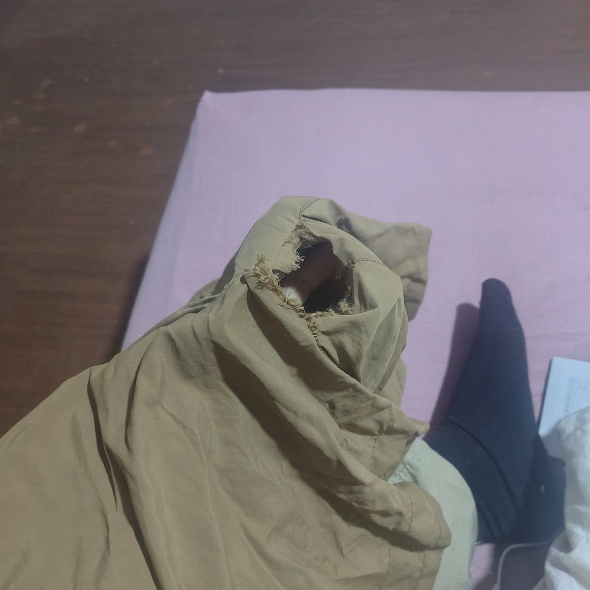
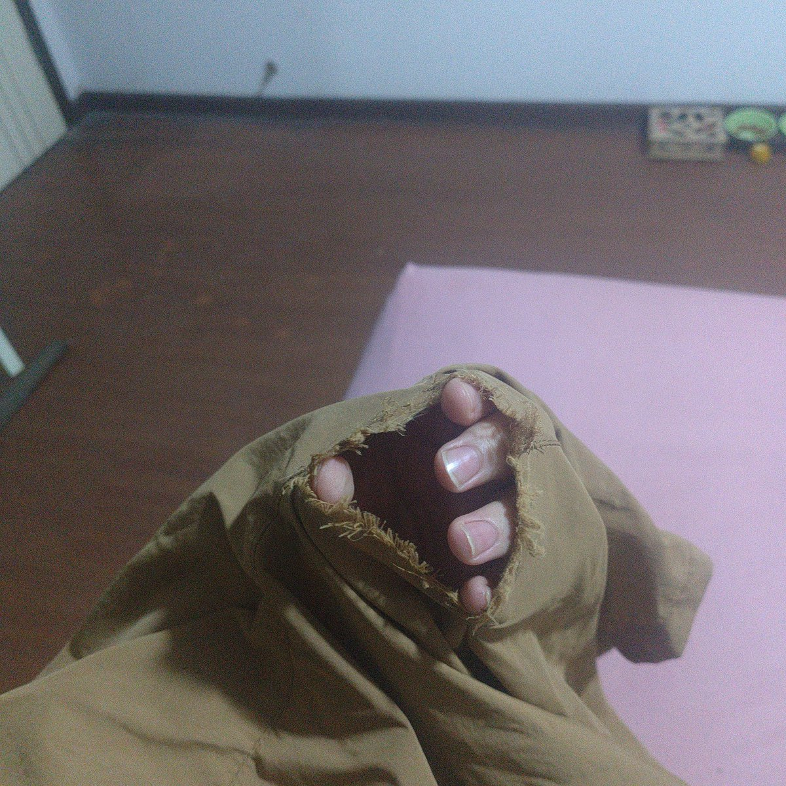
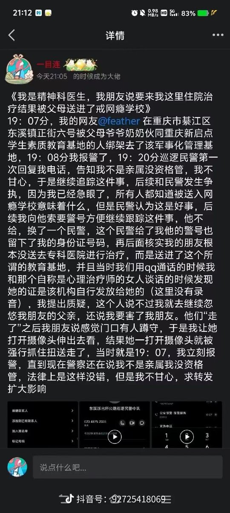

牧鸢
@LwrDHYyuxR22499
@Xuyiofficial 如果我有我就不配做救助
我也不至于用我父亲留给我的遗产干救助我在参与重庆新起点救
二十岁性少数杨茂莲的时候
把所有钱都花光了十一月了还在穿开了档的短裤因为我没钱换
每天出门只能尽可能的把腿夹紧以保证我的性器官不至于裸露出来
而事后我只要了五百元作为报酬给我买新的衣服



茶花（mtx;hrting（暂停））🌟
@Xuyiofficial
@LwrDHYyuxR22499 你义愤填膺，这很好。
但你真的没有想利用援助经历为自己谋求非直接利益的心态？
小二那个人经过他与北雁书的波折，已经可以说充分暴露这个老民运，想利用跨性别服务于自己政治利益的马脚了。